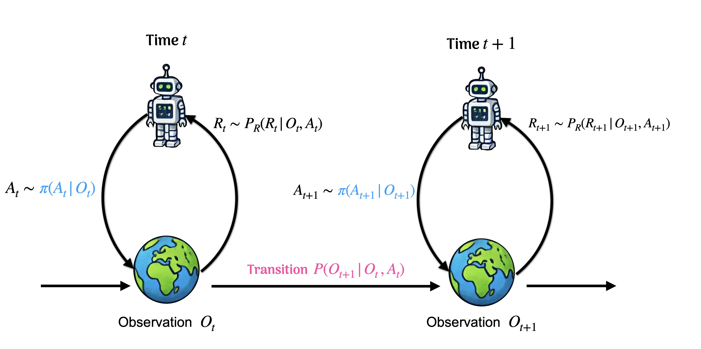

Zeyu Bian
 |
Zeyu Bian, PhD |
About
I am an Assistant Professor in the Department of Statistics at Florida State University.
I earned my PhD in Biostatistics from McGill University in 2022, supervised by Dr. Erica Moodie and Dr. Sahir Bhatnagar.
Research
|  | My research interests include
|
Publications
Preprints
- Bian* Z, Biggs* M, Gao* R, and Qi* Z (2026). Beyond Demand Estimation: Consumer Surplus Evaluation via Cumulative Propensity Weights. * Authors listed in alphabetical order.
- Bian Z, Qi Z, Shi C, and Wang L (2024). A Tale of Two Cities: Pessimism and Opportunism in Offline Dynamic Pricing.
Publications/Accepted manuscripts
- Bian Z, Shi C, Qi Z, and Wang L (2025). Off-policy Evaluation in Doubly Inhomogeneous Environments. Journal of the American Statistical Association, 120 (550), 1102-1114.
- Bian Z, Moodie EEM, Shortreed S, Lambert, S, Bhatnagar SR (2024). Variable Selection for Individualized Treatment Rules with Discrete Outcomes. Journal of the Royal Statistical Society, Series C (Applied Statistics), 73(2), 298–313.
- Moodie EEM, Bian Z, Coulombe J, Lian Y, Yang Y, and Shortreed S (2023). Variable selection in high dimensions for discrete-outcome individualized treatment rules: A case study in reducing severity of depression symptoms. Biostatistics, 25(3), 633–647.
- Bian Z, Moodie EEM, Shortreed S, Bhatnagar SR (2023). Variable Selection in Regression-based Estimation of Dynamic Treatment Regimes. Biometrics, 79(2), 988-999.
- Bian Z, Moodie EEM, Shortreed S, Bhatnagar SR (2023). Tailoring Variable Selection and Ranking for Optimal Treatment Decision. Contributed to Handbook of Statistical Methods for Precision Medicine.